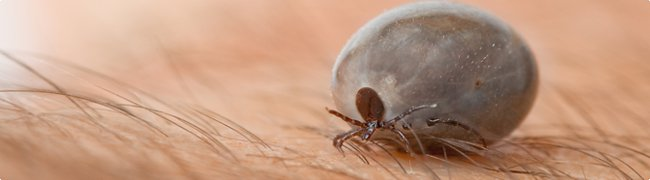
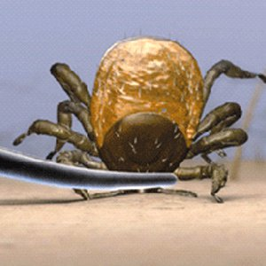

Profilaktyka
Sprawdź jak się chronić przed Kleszczowym Zapaleniem Mózgu i innymi chorobami odkleszczowymi.
Jak się zabezpieczyćCo zrobić po ugryzieniu kleszcza
Ukąszenia kleszczy są bezbolesne, ponieważ ślina kleszcza zawiera wiele substancji biochemicznych w tym środki miejscowo znieczulające.
- 
- Wczepiony kleszcz Poprawne złapanie kleszcza
{kind=link}
Dlatego należy dokładnie obejrzeć całe ciało zwracając uwagę na małe punkciki ponieważ larwa kleszcza przenosząca zakażenie KZM mierzy zaledwie 0,6 mm do 1 mm.
Jeżeli dostrzeżesz wczepionego kleszcza, usuń go jak najszybciej np: za pomocą pęsety z cienkimi końcami. Chwyć mocno kleszcza, tak blisko skóry, jak tylko możliwe. Pewnym ruchem oderwij go od skóry (nie obracaj!). Jeśli pozostaną części kleszcza wbite w skórę, należy je usunąć tak szybko, jak tylko możliwe.
Paraliżowanie kleszcza olejem, kremem, masłem lub jego wykręcanie może spowodować wstrzyknięcie przez kleszcza jeszcze większej ilości materiału zakaźnego do ciała (kleszcz wtedy "wymiotuje"). Nie należy używać wazeliny, płonących zapałek, końcówek papierosów, pilników do paznokci lub innych przedmiotów.
Jeżeli masz kłopot z usunięciem kleszcza, zgłoś się do punktu medycznego.Nie każde ukąszenie kleszcza jest niebezpieczne. Konsultacja specjalisty jest wymagana, jeżeli pojawiają się niepokojące objawy np:
- 1 7 do 14 dni po ukąszeniu kleszcza pojawiają się objawy grypopodobne: gorączka powyżej 38°C, zmęczenie, ból głowy, ból pleców i kończyn, kaszel, katar, objawy żołądkowo jelitowe, utrata łaknienia, nudności – mogą to być objawy pierwszego etapu kleszczowego zapalenia mózgu – więcej o objawach i przebiegu choroby w zakładce "O chorobie"
- 2 W okolicy ukłucia pojawił się rumień
- 3 Pojawiają się inne niepokojące objawy np. ze strony układu nerwowego nawet po kilku tygodniach od ukąszenia.